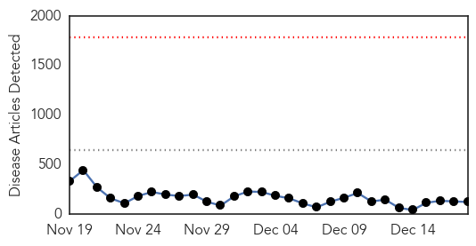
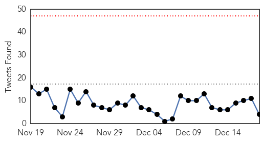
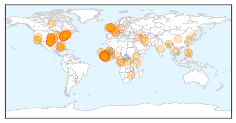
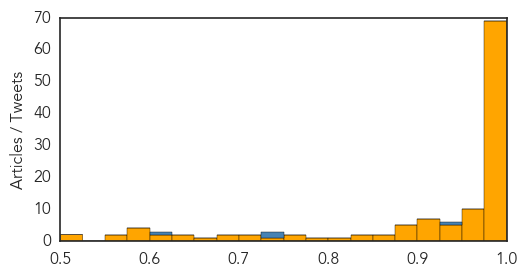
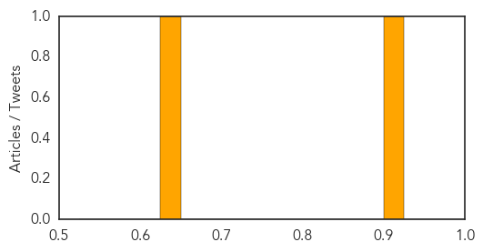

Ebola
30-Day Web Trend
0 alerts, 0 warnings

30-Day Twitter Trend
0 alerts, 0 warnings

Article Locations
Article Confidences
Top Articles:
- 1.000
- Sierra Leone’s leading doctor Victor Willoughby dies of Ebola
- 1.000
- SAFD cleared in Ebola complaint
- 1.000
- Susan Blumenthal, M.D.
- 1.000
- US hospitals step up training, preparation for Ebola
- 1.000
- How the Fight Against Ebola Shaped 2014
- 1.000
- Sierra Leone struggling to fight Ebola as doctors and nurses have left for Britain
- 1.000
- 2014 not the best of times for public health, experts say
- 1.000
- Lessons From an Outbreak: How Ebola Shaped 2014
- 1.000
- Experts: It was a busy, black-eye year for disease control - National
- 1.000
- 'Response to West Africa Ebola outbreak too slow'
- 1.000
- Ebola virus death toll rises to 6,915: WHO
- 0.999
- Ebola Survivors Fight Prejudice
- 0.999
- Ebola survivors fight prejudice
- 0.999
- Ebola: 11th Sierra Leone doctor dies; fire destroys supplies
- 0.999
- Ebola affects food supplies - Africa
- 0.999
- Ebola: UN Secretary-General will visit West Africa to 'show solidarity with those affected'
- 0.999
- Africa Focus: Researchers begin Ebola vaccine trials in Kenya
- 0.999
- Mahama meets Ban Ki Moon at Flagstaff House over Ebola
- 0.999
- Christmas celebrations banned because of Ebola
- 0.999
- Army scientist uses diagnostic tools to track Ebola, other viruses
- 0.999
- Sierra Leone's leading doctor dies of Ebola
- 0.999
- Ebola: UN Secretary-General will visit West Africa to ‘show solidarity with those affected'
- 0.999
- Sierra Leone's leading doctor dies of Ebola
- 0.999
- UPDATE 1-Sierra Leone's leading doctor dies of Ebola
- 0.998
- WHO is About To Miss Ebola Targets Set For 1st December
- 0.998
- Donors and WHO responded too slowly to West Africa Ebola outbreak, report says
- 0.998
- Ebola: appeal of the Hospital in Serabu; for FAO a million people at risk of hunger
- 0.998
- UK report: WHO failed on Ebola
- 0.998
- Is WHO To Blame For Increase In Ebola Cases?
- 0.997
- Where have Ebola's fear-mongers all gone?
- 0.997
- Donors and WHO responded too slowly to West Africa Ebola outbreak
- 0.997
- Patient at Morriston Hospital tests negative for Ebola
- 0.997
- Novo Nordisk Donates $1 Million to Fight Ebola - Liberia
- 0.997
- Doyle McManus: PolitiFact’s liars of the year
- 0.996
- U.S. Ebola Clinics in Liberia to Open With Few Patients
- 0.995
- St. Cloud stages Ebola preparedness drill
- 0.995
- Ban Ki-Moon to hold talks with President Mahama in Ghana
- 0.993
- Over 100 AU Medics from Ethiopia to stop Ebola
- 0.992
- AU jets in 101 Ethiopian medics to fight Ebola in Sierra Leone
- 0.992
- FOCUS 1000 empowers religious leaders with motor bikes
- 0.991
- Ebola Wins “Lie Of The Year”
- 0.990
- House-to-house haunt for Ebola Cases Begins
- 0.989
- CDC's 10 most important public health challenges of 2014
- 0.989
- Ebola: Sierra Leone begins house-to-house searches
- 0.988
- Data request slows timetable for Ebola vaccine trial
- 0.988
- Ebola, We Hardly Knew You: 3 Lessons from the Hysteria
- 0.987
- Derbyshire soldier Richard Blagg on front line to save lives of Ebola victims in Africa
- 0.985
- GABON: Surveillance centre to monitor ebola outbreaks
- 0.985
- Winnipeggers at front lines of Ebola outbreak - Winnipeg
- 0.984
- UN says Ebola-hit nations at risk of hunger
Showing top 50 articles...
Top Tweets:
- 0.930
- 2 ebola patients = 3,000 lbs of medical waste. some lessons from the ebola scare: http://t.co/4budiNDYfr
- 0.927
- RT: "Es un catálogo de historias tristes. Con tantos pacientes es fácil perder la noción del tiempo" @20m MSF Ebola http://t.…
- 0.908
- RT: Sierra Leone's leading doctor dies of Ebola http://t.co/lfOUtXk8ad Dr. Willoughby was 12th SierraLeone doc to contract Ebola…
- 0.890
- RT: Ebola toll nears 7,000; rate of spread slows in Sierra Leone - WHO http://t.co/fqzuszj4xl
- 0.822
- Guinée : une base logistique Ebola en feu http://t.co/02khcwrXyI
- 0.779
- RT: Sierra Leone's leading doctor dies of Ebola http://t.co/JeGlMbELQR
- 0.766
- He saw Sierra Leone through many difficult times, & was a mentor to many. R.I.P. Dr. Willoughby. http://t.co/cAVqodCvhc EndEbolaNow Ebola
- 0.759
- Monrovia, Liberia: two more health workers can say ISurvivedEbola! http://t.co/PQyBx8xxlN ebola africa
- 0.758
- Ethiopian health workers arrive in West Africa; Mali clears last Ebola quarantines - today's Executive Summary http://t.co/DnL0bjtBLI
- 0.718
- Today's news on avianflu avianinfluenza EbolaOutbreak EbolaResponse Ebola MERS http://t.co/SqqvYWNDlI
- 0.693
- 11th Sierra Leonean doctor dies from Ebola http://t.co/p9eCno1P0Y
- 0.678
- RT: Donors and WHO responded too slowly to West Africa Ebola outbreak - report http://t.co/ccebCcZ0hD
- 0.596
- Clinical Care of 2 Patients c Ebola http://t.co/0jVMt9Qy2e Is the patient’s energy level a sign or symptom? Most* doctors know healthcare
- 0.565
- World Health Organisation and DfID slow to react on Ebola, say UK MPs http://t.co/h80G41wGuF
- 0.543
- RT: Outbreaks Finds Gaps in Nation's Ability to Respond to Ebola & Other Infectious Diseases http://t.co/NRw3nkJibl
Hepatitis
30-Day Web Trend
0 alerts, 0 warnings

30-Day Twitter Trend
0 alerts, 0 warnings

Article Locations

Article Confidences
Top Articles:
Top Tweets:
-
No tweets found for Dec 18, 2014